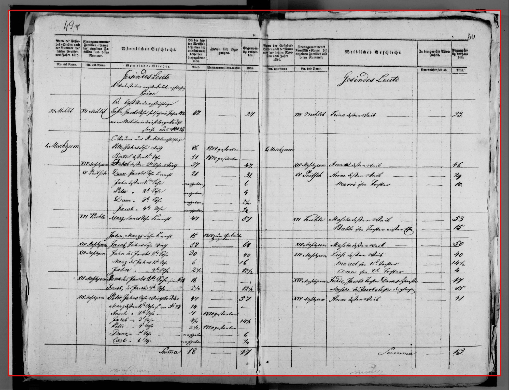
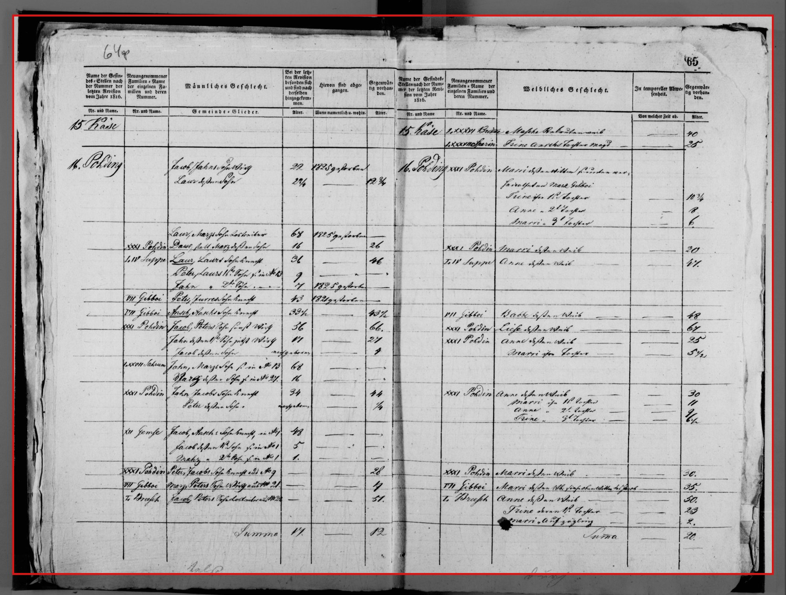
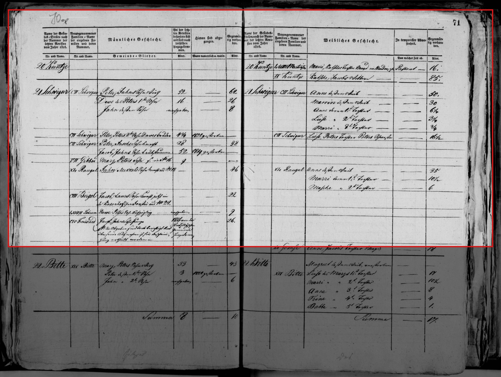
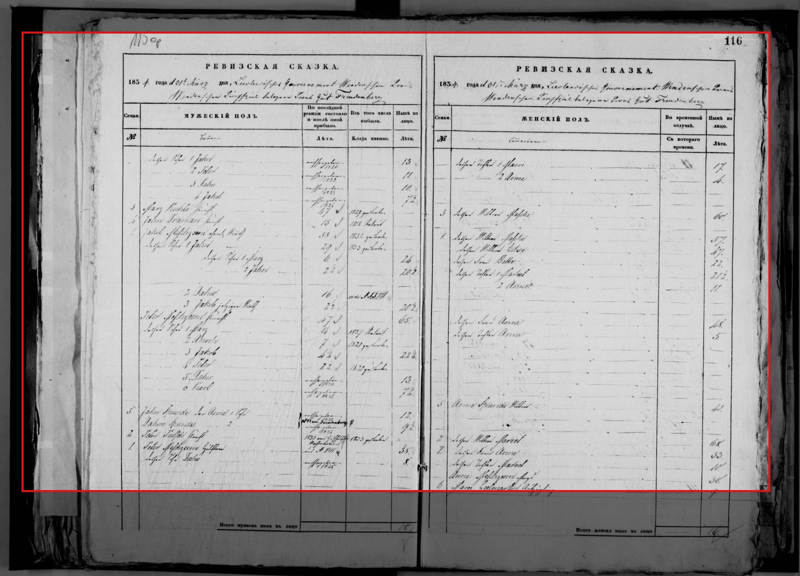

Maža Mežciema b. 1776
Peter's 5× great-grandmother.
Also recorded as Masche (1826 & 1834 revisions).
Maža Mežciema was born about 1776 in Priekuļi, Cēsis district, Vidzeme, Latvia1.
Family
- Partner
- Jēkabs Mežciems 1758–1832
- Children
- Jānis Mežciems 1786–1833 documented
Life events
| Event | Date | Place and details |
|---|---|---|
| Born | abt 1776 | Priekuļi, Cēsis district, Vidzeme, Latvia1 |
| Lived | 1826 | Priekuļi, Cēsis district, Vidzeme, Latvia1 |
| Lived | 12 Apr 1834 | Priekuļi, Cēsis district, Vidzeme, Latvia Old Style (Julian) date: 31 Mar 18342 |
Records




Open questions
Sources
- Priekuļi (Freudenberg) surname revision 1826, No. 1 Meschzeem (surname XIV Meschzeem), LVVA f. 199, apr. 1, l. 112, image 54 (ff. 49v–50r), LVVA f. 199, apr. 1, l. 112, image 54.
XIV Meschzeem | Jacob Jahns Sohn Wirth | 58 | — | 68 / XIV Meschzeem | Jahn des Jacobs 1te Sohn | 30 | — | 40 / Marz des Jahns 1te Sohn | 6 | — | 16 / Jahn ,, 2te Sohn | 2½ | — | 12½ ‖ XIV Meschzeem | Masche deßen Weib | 50 / XIV Meschzeem | Liese deßen Weib | 40 / Mareet ihre 1te Tochter | 14½ / Anne ihre 2te Tochter | 4
Translation: Surname XIV Meschzeem: Jacob, Jahn's son, farmer, 58 -> 68; his wife Masche, 50. Jahn, Jacob's 1st son, 30 -> 40; his wife Liese, 40; Jahn's 1st son Marz, 6 -> 16; 2nd son Jahn, 2½ -> 12½; their 1st daughter Mareet, 14½; their 2nd daughter Anne, 4.
Age 50 in 1826 and 57 in 1834 at Farm 1. / I. Meschzeem, Priekuļi (born c. 1776/77).
- Priekuļi (Freudenberg) soul revision 1834, I. Meschzeem, family 1, LVVA f. 199, apr. 1, l. 112, image 117 (ff. 115v–116r), LVVA f. 199, apr. 1, l. 112, image 117.
1. | Jakob Meschzeem ehemals Wirth | 58 | 1832 gestorben | — / dessen Sohn 1 Jahn | 29 | 1833 gestorben | — / dessen Söhne 1 Marz | 6 | — | 24 / 2 Jahn | 2½ | — | 20½ / 2 Dawe | 16 | vide N XXVIII | — / 3 Jakob jetziger Wirth | 2½ | — | 20½ ‖ 1 | dessen Wittwe Masche | 57 / dessen Wittwe Lihse | 47 / dessen Frau Babbe | 22 / dessen Töchter 1 Mareet | 21½ / 2 Anne | 11
Translation: Family 1: Jakob Meschzeem, former farmer, 58 [in 1816], died in 1832; his widow Masche, 57. His 1st son Jahn, 29 [in 1816], died in 1833; his widow Lihse, 47. His [Jahn's] sons: 1. Marz, 6 -> 24 (his wife Babbe, 22); 2. Jahn, 2½ -> 20½; his [Jahn's] daughters: 1. Mareet, 21½; 2. Anne, 11. [Jakob Sr.'s sons:] 2. Dawe, 16, see No. XXVIII; 3. Jakob, current farmer, 2½ -> 20½.
Priekuļi (Freudenberg) 8th soul revision, dated 31 March 1834 O.S. (= 12 April 1834 N.S., LVVA f. 199, apr. 1, l. 112, image 117, ff. 115v–116r), farm I. Meschzeem, family no. 1: former farmer Jakob Meschzeem ('Jakob Meschzeem ehemals Wirth'), age 58 in 1816, died in 1832 ('1832 gestorben'), leaving widow Masche, age 57; his 1st son Jahn ('dessen Sohn 1 Jahn'), age 29 in 1816, died in 1833 ('1833 gestorben'), leaving widow Lihse, age 47; Jahn's sons 1. Marz (6 -> 24; wife Babbe, 22) and 2. Jahn (2½ -> 20½); Jahn's daughters 1. Mareet (21½) and 2. Anne (11, born c. 1822/23). Jakob's 3rd son Jakob (2½ -> 20½) is now the current farmer ('3 Jakob jetziger Wirth').